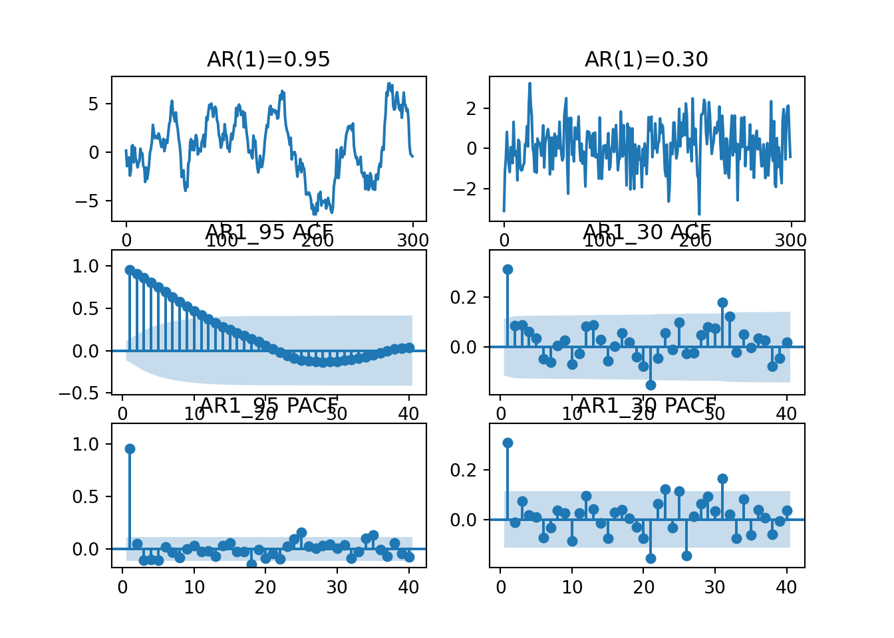
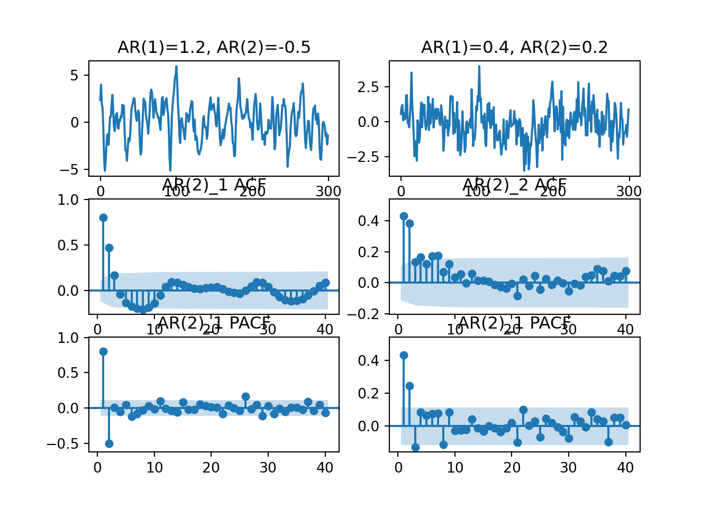

Chapter 6 4.3 자기회귀모형
6.1 -
일반적인 ’p-차 자기회귀모형’은 다음과 같이 쓸 수 있으며 기호로 AR(p)라고 표시한다.
\[ x_t=\phi_1x_{t-1}+\phi_2x_{t-2}+\cdots+\phi_px_{t-p}+a_t\\ 또는\\ (1-\phi_1L-\phi_2L^2-\cdots-\phi_pL^p)=a_t\\ \phi(L)x_t=a_t \]
확률과정 x_t가 안정적이기 위해서는 래그다항식 \(\phi(L)\)의 행렬식(determinant)을 0으로 두었을 때 이의 모든 근(또는 해)이 ‘복소수 단위원’의 ’밖에’ 존재하여야 한다. 즉,
\[ 1-\phi_1z-\phi_2z^2-\cdots-\phi_pz^p=0 \]
에서 z의 모든 근(차수 p개만큼 존재할 것으로 기대)이 복소수 단위원(complex unit circle)의 밖에(outside) 존재하여야 한다.
안정성 조건을 달리 표현하는 방법도 있다. AR(\(p\))모형을 따르는 시계열 \(x_t\)의 자기상관함수는 후술하는 것 처럼 \(p\)-차 차분방정식의 형태를 가지므로 이의 특성방정식(characteristic equation)의 일반해는 다음과 같다.
\[ \rho_k = c_1\lambda_1^k + c_2\lambda_2^k + \cdots + c_p\lambda_p^k \quad for \quad k\ge0 \]
단, \(\lambda_i\)는 \(z^p-\phi_1z^{p-1}-\cdots-\phi_p=0\) 방정식의 해이다. 이 경우 차분 방정식이론에 따르면 \(x_t\)의 안정성 조건은 \(\lambda\)가 모두 복소수 단위원의 안(inside)에 존재하는 것이다.
6.1.1 예시 (안정성 조건 확인)
AR(2)모형으로 설정하고 추정하였다고 하자.
import statsmodels.api as sm
from statsmodels.tsa.ar_model import AutoReg
res = AutoReg(data, lags = 2).fit()## C:\Users\user\Desktop\FINTIM~1\python\lib\site-packages\statsmodels\tsa\base\tsa_model.py:471: ValueWarning: A date index has been provided, but it has no associated frequency information and so will be ignored when e.g. forecasting.
## self._init_dates(dates, freq)print(res.summary())## AutoReg Model Results
## ==============================================================================
## Dep. Variable: rtn No. Observations: 5427
## Model: AutoReg(2) Log Likelihood 15203.551
## Method: Conditional MLE S.D. of innovations 0.015
## Date: 금, 29 7 2022 AIC -30399.103
## Time: 06:01:54 BIC -30372.708
## Sample: 2 HQIC -30389.890
## 5427
## ==============================================================================
## coef std err z P>|z| [0.025 0.975]
## ------------------------------------------------------------------------------
## const 0.0003 0.000 1.590 0.112 -7.38e-05 0.001
## rtn.L1 0.0157 0.014 1.158 0.247 -0.011 0.042
## rtn.L2 -0.0169 0.014 -1.251 0.211 -0.043 0.010
## Roots
## =============================================================================
## Real Imaginary Modulus Frequency
## -----------------------------------------------------------------------------
## AR.1 0.4636 -7.6674j 7.6814 -0.2404
## AR.2 0.4636 +7.6674j 7.6814 0.2404
## -----------------------------------------------------------------------------print(res.diagnostic_summary())## Test of No Serial Correlation
## ===========================================
## Lag Ljung-Box LB P-value DF
## -------------------------------------------
## 1 2.103 0.147 1
## 2 6.859 0.032 2
## 3 6.861 0.076 3
## 4 9.329 0.053 4
## 5 9.670 0.085 5
## 6 9.746 0.136 6
## 7 9.930 0.193 7
##
##
## Test of Normality
## ============================================
## Jarque-Bera P-value Skewness Kurtosis
## --------------------------------------------
## 10196.802 0.000 -0.364 9.677
##
##
## Test of Conditional Homoskedasticity
## ===========================================
## Lag ARCH-LM P-value DF
## -------------------------------------------
## 1 285.053 0.000 1
## 2 504.296 0.000 2
## 3 533.704 0.000 3
## 4 684.522 0.000 4
## 5 782.091 0.000 5
## 6 808.062 0.000 6
## 7 807.901 0.000 7
## 8 813.591 0.000 8
## 9 823.510 0.000 9
## 10 859.046 0.000 10
## -------------------------------------------print("AR Roots : ", res.roots)## AR Roots : [0.46357281-7.66742076j 0.46357281+7.66742076j]다음은 AR[0,0,0,0,5]를 추정한 결과이다.
import statsmodels.api as sm
from statsmodels.tsa.ar_model import AutoReg
res2 = AutoReg(data, lags = [5]).fit()## C:\Users\user\Desktop\FINTIM~1\python\lib\site-packages\statsmodels\tsa\base\tsa_model.py:471: ValueWarning: A date index has been provided, but it has no associated frequency information and so will be ignored when e.g. forecasting.
## self._init_dates(dates, freq)print(res2.summary())## AutoReg Model Results
## ==============================================================================
## Dep. Variable: rtn No. Observations: 5427
## Model: Restr. AutoReg(5) Log Likelihood 15198.582
## Method: Conditional MLE S.D. of innovations 0.015
## Date: 금, 29 7 2022 AIC -30391.164
## Time: 06:01:55 BIC -30371.369
## Sample: 5 HQIC -30384.255
## 5427
## ==============================================================================
## coef std err z P>|z| [0.025 0.975]
## ------------------------------------------------------------------------------
## const 0.0003 0.000 1.612 0.107 -6.93e-05 0.001
## rtn.L5 -0.0278 0.014 -2.052 0.040 -0.054 -0.001
## Roots
## =============================================================================
## Real Imaginary Modulus Frequency
## -----------------------------------------------------------------------------
## AR.1 -2.0478 -0.0000j 2.0478 -0.5000
## AR.2 -0.6328 -1.9476j 2.0478 -0.3000
## AR.3 -0.6328 +1.9476j 2.0478 0.3000
## AR.4 1.6567 -1.2037j 2.0478 -0.1000
## AR.5 1.6567 +1.2037j 2.0478 0.1000
## -----------------------------------------------------------------------------print(res2.diagnostic_summary())## Test of No Serial Correlation
## ===========================================
## Lag Ljung-Box LB P-value DF
## -------------------------------------------
## 1 2.847 0.092 1
## 2 4.638 0.098 2
## 3 4.698 0.195 3
## 4 4.698 0.320 4
## 5 6.853 0.232 5
## 6 7.133 0.309 6
## 7 7.160 0.412 7
## 8 7.508 0.483 8
##
##
## Test of Normality
## ============================================
## Jarque-Bera P-value Skewness Kurtosis
## --------------------------------------------
## 10140.655 0.000 -0.387 9.655
##
##
## Test of Conditional Homoskedasticity
## ===========================================
## Lag ARCH-LM P-value DF
## -------------------------------------------
## 1 286.833 0.000 1
## 2 513.782 0.000 2
## 3 541.687 0.000 3
## 4 697.659 0.000 4
## 5 793.518 0.000 5
## 6 817.815 0.000 6
## 7 818.163 0.000 7
## 8 823.956 0.000 8
## 9 832.184 0.000 9
## 10 864.609 0.000 10
## -------------------------------------------print("AR Roots \n===========================================\n ", res2.roots)## AR Roots
## ===========================================
## [-2.04778776-0.j -0.63280122-1.94756189j -0.63280122+1.94756189j
## 1.6566951 -1.20365944j 1.6566951 +1.20365944j]6.2 4.3.1 AR(1) 모형
6.2.1 -
자기회귀모형의 특성을 이의 가장 간단한 형태인 AR(1) 모형을 사용하여 살펴보자.
\[ x_t = \phi x_{t-1} + a_t \\ 또는\\ (1-\phi L)x_t = \phi(L)x_t = a_t \]
\(x_t\)가 안정적 과정인 경우 식을 다음과 같이 변형할 수 있을 것이다.
\[ x_t = (1-\phi L)^{-1}a_t\\ =(1+\phi L + \phi ^2L^2+\cdots)a_t\\ =a_t + \phi a_{t-1}+ \phi ^2 a_{t-2}+ \phi^3 a_{t-3} + \cdots \]
안정적 과정에서 \(E(x^2_t)=E(x^2_{t-k})=\sigma^2_x=\gamma_0\)가 성립하므로
\[ E(x_t)=0 \quad \forall t\\ Var(x_t)=E[(x_t-E(x_t))^2]=\sigma^2+\phi^2 \sigma^2 + \phi^4 \sigma^2 + \cdots\\ =\frac{1}{1-\phi^2}\sigma^2 \]
식은 \(x_t\)의 비조건부평균, 즉 장기평균값이 영임을 보여주고 있다. 만일 AR(1)과정을 보다 일반적으로
\[ x_t - \mu = \phi(x_{t-1}-\mu)+a_t \]
와 같이 평균으로부터의 이탈부분이 자기회귀하는 것으로 설정하였다면, \(E(x_t) = 1/(1-\phi L) = 1/(1-\phi)\)가 된다. 두 번째 등호가 성립하는 이유는 상수에 래그를 취해도 상수이기 때문이다. (즉, \(cL=L\))
\(Var(x_t)=\sigma^2/(1-\phi^2)\)에서 AR(1)과정의 비조건부분산, 즉 장기분산값을 나타내는데 \(|\phi|<1\)로 인한 확률과정 \(x_t\)의 분산 \(Var(x_t)\)는 백색잡음의 분산 \(\sigma^2\)보다 큼을 알 수 있다. 잔차항의 변동폭이 실제값의 변동폭보다 작은 것이 바로 이 이유에서 비롯함을 알 수 있다.
AR(1)과정의 공분산(covariance)의 특성을 살펴보자.
\[ \gamma_k = E[(x_t-E(x_t))(x_{t-k}-E(x_{t-k}))]\\ =E[(\phi^k x_{t-k}+\Sigma^{k-1}_{j=0}\phi^j a_{t-j})x_{t-k}]\\ =\phi^k \gamma_0 \quad (\because x_{t-k}=\Sigma^{\infty}_{j=0}\phi^j a_{t-k-j})\\ =\phi(\phi^{k-1}\gamma_0)=\phi \gamma_{k-1} \]
그러므로 AR(1)모형은 공분산과정 방적식과 자료생성모형이 서로 같다는 특성이 있다.그리고 \(|\phi|<1\)가 만족하면 ‘안정성조건’을 만족한다고 한다.
6.2.1.1 AR(1)모형의 안정성 조건
앞에서 설명한 안정성 조건을 AR(1)모형에 적용하여 보면 \(\phi(L)=1-\phi L\)이므로 안정성을 위해서는 \(|\phi(L)|=0\)의 근이 단위원 밖에 존재하여야 한다. 즉,
\[ |1-\phi z| = 0 \quad or \quad |z|=1/|\phi| \]
그러므로 안정성 조건 \(|z|>1\)은 \(|\phi|<1\)을 의미한다. 만일 근이 경계선상인 1이면 안정성 조건을 만족하지 않으며 이는 “확률보행과정”(random walk process)라고 할 수 있을 것이다. 이 경우 분산이 발산한다.
6.2.1.2 AR(1)모형의 자기상관함수(ACF)
AR(1)모형의 자기상관함수는 다음과 같이 계산한다.
\[ \rho_k = \gamma_k/\gamma_0 = \phi^k \]
그러므로 안정성 조건을 만족하면서 \(phi>0\)이면 ACF는 \(k\)가 증가함에 따라 지수적으로 0에 가까워지고 만일 \(\phi<0\)이면 ACF는 진동하는(oscillatory)형태로 0에 접근한다. 두 경우 모두 \(\phi\)가 비정상과정이 되는 한계값 \(\pm1\)에 가까운 경우 감소하는 속도는 매우 느리게 된다. 표본 ACF \(\hat{\rho}_k\)의 표준편차는 다음과 같다.
\[ SD(\hat{\rho}_k) \simeq \sqrt{(\frac{1}{T})(1+2\hat{\rho}^2_1+\cdots+2\hat{\rho}^2_{k-1})} \]
6.2.2 예제) AR(1)과정 : 시뮬레이션
다음은 두 개의 AR(1)과정의 시뮬레이션이다. AR1_95와 AR1_30은 각각 \(\phi = 0.95, \phi = 0.3\)을 가정한 것이고 두 계열 모두 비조건부평균을 0으로 가정하였다.
from statsmodels.tsa.arima_process import ArmaProcess
plt.cla()
fig, ax = plt.subplots(3,2)
# ar1_95 phi = 0.95
plt.subplot(3, 2, 1)
ar1_95_ar_parm = np.array([1, -0.95]) # 0.95를 넣기 위해서는 음수로 넣어야 하며, 1은 lag 0에서를 의미함.
ar1_95_ma_parm = np.array([1])
AR1_95 = ArmaProcess(ar1_95_ar_parm, ar1_95_ma_parm).generate_sample(nsample=300)
plt.plot(AR1_95)
plt.title('AR(1)=0.95')
# ar1_30 phi = 0.3
plt.subplot(3, 2, 2)
ar1_30_ar_parm = np.array([1, -0.3])
ar1_30_ma_parm = np.array([1])
AR1_30 = ArmaProcess(ar1_30_ar_parm, ar1_30_ma_parm).generate_sample(nsample=300)
plt.plot(AR1_30)
plt.title('AR(1)=0.30')
#ar1_95 acf
plot_acf(AR1_95, lags=40, use_vlines=True, zero = False, auto_ylims=True, ax=ax[1,0], title ='AR1_95 ACF')
#ar1_30 acf
plot_acf(AR1_30, lags=40, use_vlines=True, zero = False, auto_ylims=True, ax=ax[1,1], title ='AR1_30 ACF')
#ar1_95 pacf
plot_pacf(AR1_95, lags=40, use_vlines=True, zero = False, auto_ylims=True, ax=ax[2,0], title ='AR1_95 PACF')
#ar1_30 pacf
plot_pacf(AR1_30, lags=40, use_vlines=True, zero = False, auto_ylims=True, ax=ax[2,1],title ='AR1_30 PACF' )
plt.show()
두 계열의 표본 ACF를 보면, AR(1)과정임에도 불구하고 두 계열 모두 래그 2 이상에서도 자기상관을 가지고 있음을 확인할 수 있다(?).
어떤 임의의 자료가 있을 때 이의 Sample ACF, Sample PACF가 위의 그림과 유사하다고 하자. 즉, 표본 ACF값이 상대적으로 부드럽게 감소하고(‘taper-off’), 표본 PACF 값은 래그 1 이후에도 0으로 갑자기 줄어드는 경우(‘cut-off after lag 1’)이다. 이 경우 우리는 임의의 자료가 AR(1)과정에서 생성된 것이라고 추측할 수 있으며, 이 자료를 AR(1)모형으로 표현하여 모형을 추정하게 되는 것이다.
6.3 4.3.2 AR(2) 모형
6.3.1 -
AR(2)모형은 다음과 같다.
\[ x_t-\mu = \phi_1(x_{t-1} - \mu) + \phi_2(x_{t-2}-\mu)+a_t \]
또는 래그연산자 \(L\)을 사용하여 다음과 같이도 쓸 수 있다. 단, 이후 식들에서는 편의를 위해 \(\mu=0\)을 가정한다.
\[ (1-\phi_1L-\phi_2L^2)(x_t-\mu)=\phi(L)x_t = a_t \]
AR(1)과정과 동일한 방법으로 안정성 조건을 확인한다면, 다음과 같다.
\[ \phi_1 + \phi_2 < 1\\ -\phi_1+ \phi_2 < 1\\ -1<\phi_2<1 \]
AR(2)모형의 자기공분산을 계산하여보자.
\[ E(x_t,x_{t-k}) = \phi_1E(x_{t-1}x_{t-k})+\phi_1E(x_{t-2}x_{t-k})+E(a_tx_{t-k})\\ \gamma_k-\phi_1\gamma_{k-1}-\phi_2\gamma_{k-2}=E(a_tx_{t-k})\\ \quad \\ \gamma_0-\phi_1\gamma_1-\phi_2\gamma_2 = E(a_tx_{t-k}) = \sigma^2_a\\ \gamma_k-\phi_1\gamma_{k-1}-\phi_2\gamma_{k-2} = E(a_tx_{t-k}) = 0, \quad k = 1,2,\cdots \]
따라서 AR(1)모형의 경우와 유사하게 AR(2)과정의 자기공분산 방정식 또한 자료생성과정과 같은 형태를 가짐을 알 수 있다.
6.3.1.1 AR(2)모형의 자기상관함수(ACF)
자기상관계수 방정식 또한 자기공분산 방정식과 같이 AR(2)자료 생성 과정과 같다.
\[ \gamma_k-\phi_1\gamma_{k-1}-\phi_2\gamma_{k-2} = 0 \\ (\gamma_k-\phi_1\gamma_{k-1}-\phi_2\gamma_{k-2})/\gamma_0 = 0/\gamma_0 \\ \rho_k-\phi_1\rho_{k-1}-\phi_2\rho_{k-2} = 0, \quad k=1,2,\cdots \\ \quad\\ \quad\\ \rho_1=\phi_1/(1-\phi_2) \\ \rho_2=\frac{\phi^2_1}{(1-\phi_2)}+\phi_2=\frac{\phi^2_1+\phi_2-\phi^2_2}{1-\phi_2}\\ (\because \rho*k=*\rho{-k}) \]
이때 \(\gamma_0(1-\phi_1\rho_1-\phi_2\rho_2)=\sigma^2_2\)이므로 위에서 구한 \(\rho_1\)와 \(\rho_2\)를 대입하면 AR(2)과정을 따르는 \(x_t\)의 분산\(\sigma^2_x=\gamma_0\)는 다음과 같다.
\[ \gamma_0 = \sigma^2_x = (\frac{1-\phi_2}{1+\phi_2}) \cdot (\frac{\sigma^2_a}{(\phi_1+\phi_2-1)(\phi_2-\phi_1-1)}) \]
6.3.1.2 AR(2)모형의 편자기상환상관함수(Partial ACF)
AR(2)과정의 PACF는 다음과 같다.
\[ \phi_{11}=\rho_1=\frac{\phi_1}{1-\phi_2} \\ \phi_{22}=\frac{\rho_2-\rho^2_1}{1-\rho^2_1}=\phi_2 \\ \phi_{33}=0, \quad for \ k\ge 3 \]
###예제) AR(2)과정 : 시뮬레이션
다음 과정은 \((\phi_1,\phi_2) = (1.2,-0.5)\)와 \((\phi_1,\phi_2) = (0.4,0.2)\)의 모수를 갖는 AR(2)과정을 시뮬레이션하고 이들의 표본 ACF, PACF를 계산하는 코드이다.
from statsmodels.tsa.arima_process import ArmaProcess
plt.cla()
fig, ax = plt.subplots(3,2)
# ar2_1 phi = 1.2,-0.5
plt.subplot(3, 2, 1)
ar2_1_ar_parm = np.array([1, -1.2, 0.5]) # 0.95를 넣기 위해서는 음수로 넣어야 하며, 1은 lag 0에서를 의미함.
ar2_1_ma_parm = np.array([1])
AR2_1 = ArmaProcess(ar2_1_ar_parm, ar2_1_ma_parm).generate_sample(nsample=300)
plt.plot(AR2_1)
plt.title('AR(1)=1.2, AR(2)=-0.5')
# ar2_2 phi = 0.4, 0.2
plt.subplot(3, 2, 2)
ar2_2_ar_parm = np.array([1, -0.4, -0.2])
ar2_2_ma_parm = np.array([1])
AR2_2 = ArmaProcess(ar2_2_ar_parm, ar2_2_ma_parm).generate_sample(nsample=300)
plt.plot(AR2_2 )
plt.title('AR(1)=0.4, AR(2)=0.2')
#ar2_95 acf
plot_acf(AR2_1, lags=40, use_vlines=True, zero = False, auto_ylims=True, ax=ax[1,0], title ='AR(2)_1 ACF')
#ar2_30 acf
plot_acf(AR2_2, lags=40, use_vlines=True, zero = False, auto_ylims=True, ax=ax[1,1], title ='AR(2)_2 ACF')
#ar2_95 pacf
plot_pacf(AR2_1, lags=40, use_vlines=True, zero = False, auto_ylims=True, ax=ax[2,0], title ='AR(2)_1 PACF')
#ar2_30 pacf
plot_pacf(AR2_2, lags=40, use_vlines=True, zero = False, auto_ylims=True, ax=ax[2,1],title ='AR(2)_1 PACF' )
plt.show()
두 시뮬레이션 모두 표본 PACF를 보면 래그 2 이후 모두 단절(cutt-off)되는 특성을 보이고 있다. 역으로 표본 PACF로 부터 AR(2)모형이 이 데이터들의 자료 생성 과정으로 적절한 후보임을 알 수도 있을 것이다.
또한 표본 ACF를 보면 점차 감소(taper-off)하는 모형을 가지는데 긴 래그에서 집단적으로 작지만 음의 계수를 띄고 있는 것을 확인할 수 있다. 이러한 AR(2)과정의 움직임을 ‘준사이클’(pseudo-cycle)이라고 부르기도 한다.
6.4 4.3.3 p-차 자기회귀모형(AR(p) 모형)
6.4.1 -
\(p\)-차 자기회귀 모형의 표현식은 다음과 같다.
\[ x_t = \phi_1x_{t-1}+\phi_2x_{t-2}+\cdots+\phi_px_{t-p}+a_t \]
AR(p) 모형에서 공분산을 계산하면 다음과 같다.
$$ k=E(x_tx{t-k})\ =1E(x{t-1}x_{t-k})+2E(x{t-2}x_{t-k})++pE(x{t-p}x_{t-k})+E(a_tx_{t-k}) \ =1{k-1}+2{k-2}++p{k-p} for k>0 \ 0 = ^p{j=1}_j_j+^2_a, for k=0 (k={-k})
$$
6.5 4.3.4 AR(p) 모형의 MA(\(\infty\)) 모형으로의 전환
6.5.1 -
다음과 같은 안정적 \(p\)-차 자기회귀 모형을 생각해보자.
\[ (1-\phi_1L-\phi_1L-\cdots-\phi_1L)x_t = a_t \\ \phi(L)x_t = a_t \]
이를 다음과 같이 다시 쓸 수 있다.
\[ x_t = a_t/\phi(L) = \psi(L)a_t \]
단, \(\psi(L) = (1+\psi_1L+\psi_2L^2+\cdots)\)로 우리고 구하고자 하는 래그 다항식으며 다음을 만족하게 된다.
\[ \phi(L)\psi(L)=1 \]
6.5.1.1 충격반응함수(impulse response function)
계수 \(\psi_k\)는 \(t\)-시점의 충격 \(a_t\)가 \((t+k)\)-기의 \(x_t\)에 미치는 영향을 측정한다. 즉, 안정적 확률과정의 경우 \(\partial x_{t-k}/\partial a_t = \psi_k\)가 성립한다. 이를 ‘충격반응함수’(impulse response function)라고 하며 AR(p)모형의 계수 자체로는 이것을 계산할 수 없고 이를 MA(\(\infty\))모형으로 전환하고 이때의 가중치 \(\psi\)를 계산해야 할 필요가 있다.
6.5.2 diy 예제) 충격반응함수
statsmodels에서는 AR에 대해서는 충격반응함수를 제공하고 있지 않습니다. ARIMA 함수를 가져와서 사용하겠습니다. 다음은 AR(2)모형의 예제입니다.
import statsmodels.api as sm
res = sm.tsa.arima.ARIMA(AR2_2, order=(2, 0, 0)).fit() #p=2 d = 0 q = 0 임으로 AR(2)
#print(res.summary())
print(res.impulse_responses(steps=10))## [1. 0.32593335 0.34933405 0.19309451 0.14785957 0.09513393
## 0.06695221 0.04494916 0.03092661 0.02100722 0.01436526]